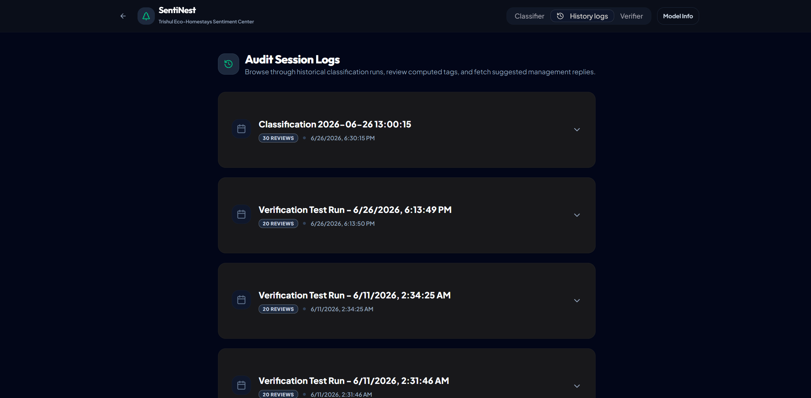
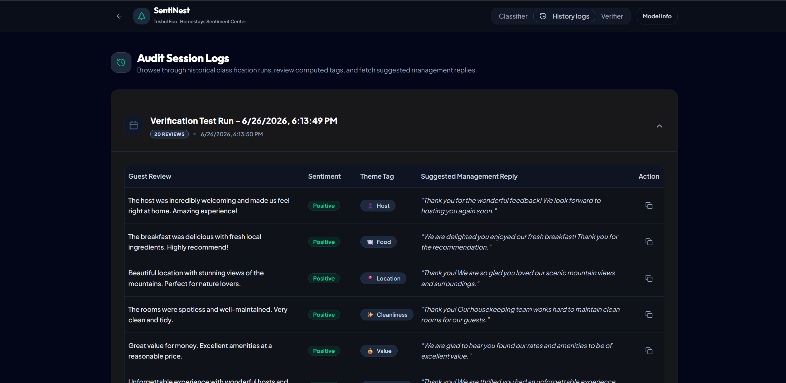
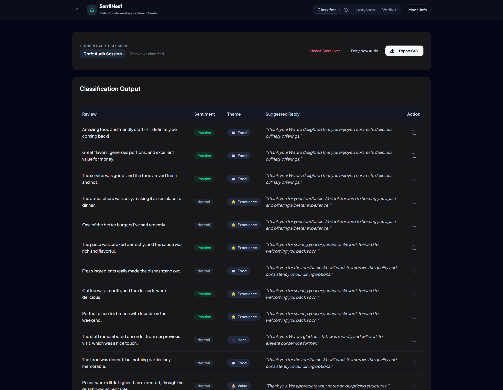
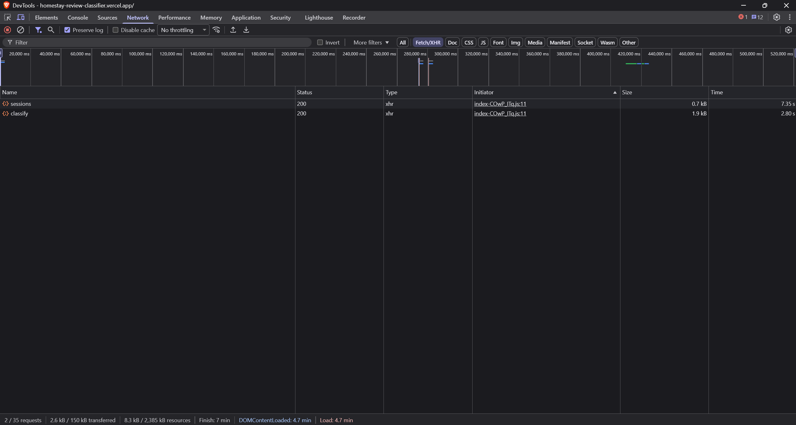

screenshot1.png, screenshot2.png, screenshot3.png, and network_tab.png and save them in the same directory as this HTML file.Ctrl + P (or click Print), set the Destination to Save as PDF, enable Background graphics, and save the PDF as W4_FrontendBackendConnection_TBI-26101025.pdf.
Figure 1 Description: Expanded view of the historic 'Audit Session Logs' module. The dashboard pulls previous runs using the GET request /api/sessions, demonstrating full connection, storage, and retrieval persistence.

Figure 2 Description: Detailed view of a historical audit session. When a session is clicked, the frontend dynamically fetches the individual classification records and sentiment badges from the PostgreSQL database via the backend API.

Figure 3 Description: Main client-facing classifier page highlighting new guest reviews analyzed and rendered with correct sentiment color badges (Positive, Neutral, Negative) and operational theme labels, generated by the backend AI integration.

Figure 4 Description: Chrome DevTools Network panel tracing successful 200 OK status codes for requests sent to the backend endpoints (e.g. /api/sessions, /api/health, /api/classify), verifying connection reliability.